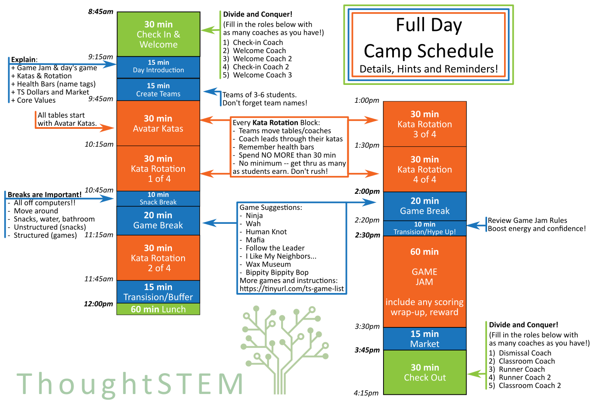
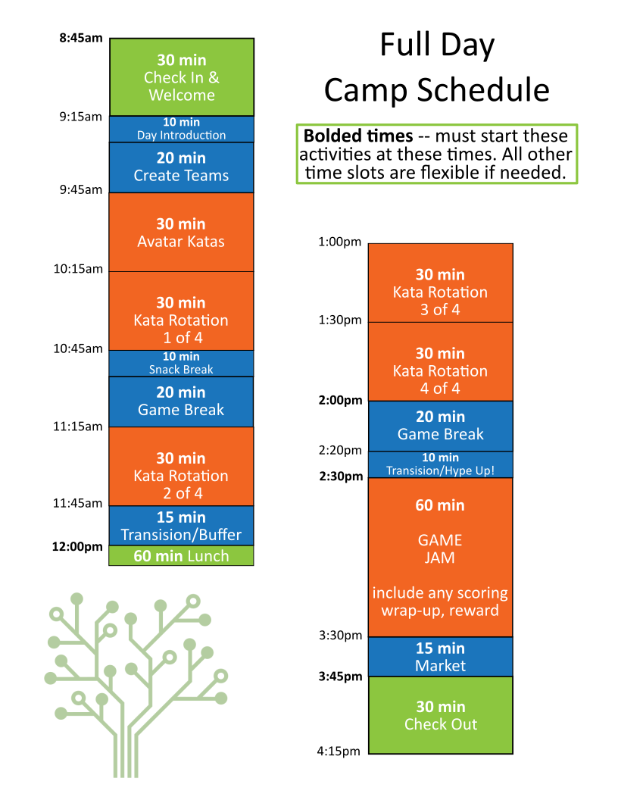

1 Full Day Camp Schedule
1.1 Schedule with Hints

1.2 Simple Schedule

1.3 Schedule Breakdown
Here is some detailed information on how each block of time on the schedule above is expected to run.
1.3.1 Check-in & Welcome
8:45am - 9:15am
It is important to start check-in on time, but not early!
Each Coach should have one of the following specific jobs. Jobs are listed below from most to least vital, so fill in the top jobs first if you have fewer than 5 coaches:
- Check-in Coach– armed with roster and any parent handouts, check-in each student:
Check paperwork status, give any needed paperwork to parent
Ask parent to confirm authorized pick-up list
Give parent any handouts
Check student in and send into room
- Welcome Coach– as students arrive, welcome them to class:
Explain and make name tags
Show where lunches/bags can be set
If no other Welcome Coaches, take on some of the responsibilities of Welcome Coach 2 as well
- Welcome Coach 2– make a comfortable environment for students while waiting for the day to officially start:
Encourage conversation between students
Notice any shy/uncomfortable students and include them
Small talk or games, just keep is comfortable and welcoming!
Check-in Coach 2– assist with check in: answering parent questions, handout paperwork, etc.
Welcome Coach 3– same as Welcome 2.
1.3.2 Introduction & Teams
9:15am* - 9:45am
*Start when all students have arrived or 9:15; whichever comes first.
Introduction – gather all students and outline the day, being sure to explain (with the help of any returning students):
GAME JAM (briefly, more detail later)
What kind of game you are making today
Katas, health bars (name tags), and table rotation
ThoughtSTEM dollars and market
Core Values
Making Teams – break the students into teams. They can choose their teams with coach assistance to make sure teams are balanced and happy! Students work together to create a team name and add it to the Daily Team Sheet.
Number of teams depends of the size of the camp and number of coaches. You will never have more teams than coaches, but you may have fewer. Use the guide below to assist:
>7 students = no more than 1 team
7 - 11 students = no more than 2 teams
12 - 15 students = no more than 3 teams
16 - 19 students = no more than 4 teams
20+ students = no more than 5 teams
1.3.3 First Kata Rotation – Avatar Katas
9:45am - 10:15am
Each team is directed to a table with a coach. That coach leads the students through as many of the Avatar Katas as their team earns in the 30 minute block.
This is the only kata block where everyone is working on the same katas. See below for more guidelines.
1.3.4 Kata Rotations
10:15am - 10:45am
11:15am - 11:45am
1:00pm - 1:30pm
1:30pm - 2:00pm
This is the foundation of the educational part of camp. Here’s how to optimize the LEARNING as well as the FUN!
Rotate tables and coaches – mixing things up has many benefits for students (different coaches have different teaching styles, time to stand and stretch, change in space helps wake up tired brains...) as well as for coaches (taking turns with more challenging students, students keep changing computers and can’t get attached to code, coaches can focus on knowing on set of katas).
No minimum goal – don’t stress about getting through a certain number of katas with any given team. It is more important that the students actually earn the katas than get through any specific number of katas.
First earned – fill in that table’s block
Second – bonus sticker on that table’s block
Every other kata – extra lives (heart stickers)!
Stick to 30 min max! – make sure you have time for non-computer breaks and, of course, GAME JAM!
1.3.5 Snack Break
10:45am - 10:55am
This is unstructured break time. These are great times for students to take a break from the computers and relax